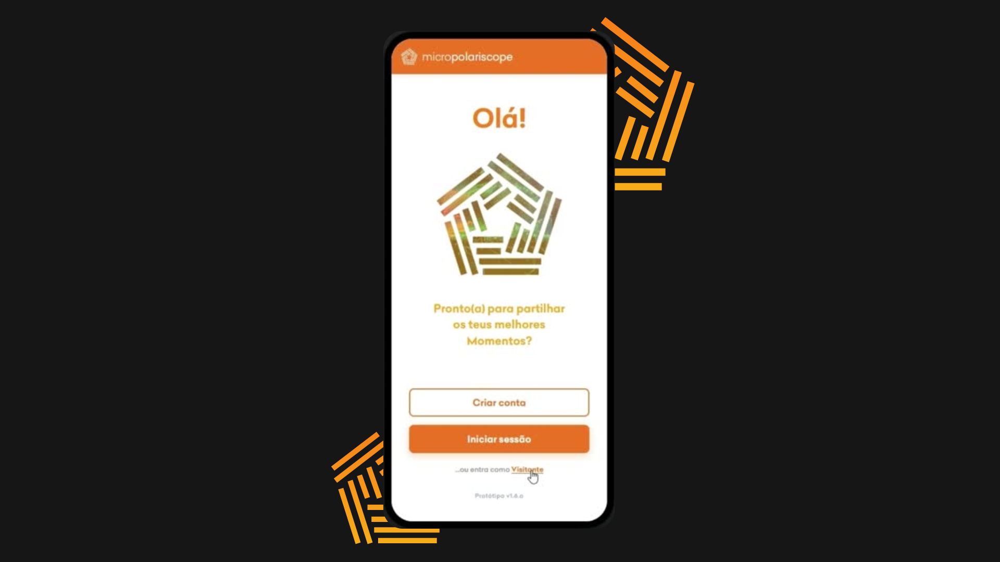

microPolariscope
microPolariscope is a full-featured web application focused on georeferenced event discovery and community management. The platform incorporates dynamic category filtering, dedicated role-based profiles, and multimedia content sharing across an interactive map interface.